STREAMS: Example Study#
Most algorithms in PETSc are memory
bandwidth limited. The speed of a simulation depends more on the total achievable [1] memory bandwidth of the computer than the speed
(or number) of floating point units.
The STREAMS benchmark, a key tool in our field, is invaluable for gaining insights into parallel performance (scaling) by measuring achievable memory bandwidth.
PETSc contains
multiple implementations of the triad STREAMS benchmark: including an
OpenMP version and an
MPI version.
for (int j = 0; j < n; ++j) a[j] = b[j]+scalar*c[j]
STREAMS measures the total memory bandwidth achievable when running n independent threads or processes on non-overlapping memory regions of an array of total length
N on a shared memory node.
The bandwidth is then computed as 3*n*sizeof(double)/min(time[]). The timing is done with MPI_Wtime(). A call to the timer takes less than 3e-08 seconds, significantly
smaller than the benchmark time. The STREAMS benchmark is intentionally embarrassingly parallel, that is, each thread or process works on its own data, completely independently of other threads or processes data.
Though real simulations have more complex memory access patterns, most computations for PDEs have large sections of private data and share only data along ghost (halo) regions. Thus the completely
independent non-overlapping memory STREAMS model still provides useful information.
As more threads or processes are added, the bandwidth achieved begins to saturate at some n, generally less than the number of cores on the node. How quickly the bandwidth
saturates, and the speed up (or parallel efficiency) obtained on a given system indicates the likely performance of memory bandwidth-limited computations.
Fig. STREAMS benchmark gcc plots the total memory bandwidth achieved and the speedup for runs on an Intel system whose details are provided below. The achieved bandwidth increases rapidly with more cores initially but then less so as more cores are utilized. Also, note that the improvement may, unintuitively, be non-monotone when adding more cores. This is due to the complex interconnect between the cores and their various levels of caches and how the threads or processes are assigned to cores.
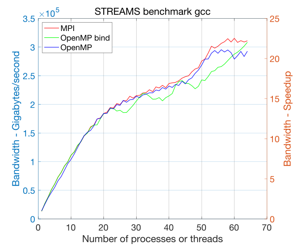
Fig. 16 STREAMS benchmark gcc#
There are three important concepts needed to understand memory bandwidth-limited computing.
Thread or process binding to hardware subsets of the shared memory node. The Unix operating system allows threads and processes to migrate among the cores of a node during a computation. This migration is managed by the operating system (OS). [2] A thread or process that is “near” some data may suddenly be far from the data when the thread or process gets migrated. Binding the thread or process to a hardware unit prevents or limits the migration.
Thread or process mapping (assignment) to hardware subsets when more threads or processes are used. Physical memory is divided into multiple distinct units, each of which can independently provide a certain memory bandwidth. Different cores may be more closely connected to different memory units. This results in non-uniform memory access (NUMA), meaning the memory latency or bandwidth for any particular core depends on the physical address of the requested memory. When increasing from one thread or process to two, one obviously would like the second thread or process to use a different memory unit and not share the same unit with the first thread or process. Mapping each new thread or process to cores that do not share the previously assigned core’s memory unit ensures a higher total achievable bandwidth.
In addition to mapping, one must ensure that each thread or process uses data on the closest memory unit. The OS selects the memory unit to place new pages of virtual memory based on first touch: the core of the first thread or process to touch (read or write to) a memory address determines to which memory unit the page of the data is assigned. This is automatic for multiple processes since only one process (on a particular core) will ever touch its data. For threads, care must be taken that the data a thread is to compute on is first touched by that thread. For example, the performance will suffer if the first thread initializes an entire array that multiple threads will later access. For small data arrays that remain in the cache, first touch may produce no performance difference.
MPI and OpenMP provide ways to bind and map processes and cores. They also provide ways to display the current mapping.
MPI, options to
mpiexec–bind-to hwthread | core | l1cache | l2cache | l3cache | socket | numa | board
–map-by hwthread | core | socket | numa | board | node
–report-bindings
–cpu-list list of cores
–cpu-set list of sets of cores
OpenMP, environmental variables
OMP_NUM_THREADS=n
OMP_PROC_BIND=close | spread
OMP_PLACES=”list of sets of cores” for example {0:2},{2:2},{32:2},{34:2}
OMP_DISPLAY_ENV=false | true
OMP_DISPLAY_AFFINITY=false | true
Providing appropriate values may be crucial to high performance; the defaults may produce poor results. The best bindings for the STREAMS benchmark are often the best bindings for large PETSc applications. The Linux commands lscpu and numactl -H provide useful information about the hardware configuration.
It is possible that the MPI initialization (including the use of mpiexec) can change the default OpenMP binding/mapping behavior and thus seriously affect the application runtime.
The C and Fortran) examples demonstrate this.
We run
ex69f with four OpenMP threads without mpiexec and see almost perfect scaling.
The CPU time of the process, which is summed over the four threads in process, is the same as the wall clock time indicating that each thread is run on a different core as desired.
$ OMP_NUM_THREADS=4 ./ex69f
CPU time reported by cpu_time() 6.1660000000000006E-002
Wall clock time reported by system_clock() 1.8335562000000000E-002
Wall clock time reported by omp_get_wtime() 1.8330062011955306E-002
Running under mpiexec gives a very different wall clock time, indicating that all four threads ran on the same core.
$ OMP_NUM_THREADS=4 mpiexec -n 1 ./ex69f
CPU time reported by cpu_time() 7.2290999999999994E-002
Wall clock time reported by system_clock() 7.2356641999999999E-002
Wall clock time reported by omp_get_wtime() 7.2353694995399565E-002
If we add some binding/mapping options to mpiexec we obtain
$ OMP_NUM_THREADS=4 mpiexec --bind-to numa -n 1 --map-by core ./ex69f
CPU time reported by cpu_time() 7.0021000000000000E-002
Wall clock time reported by system_clock() 1.8489282999999999E-002
Wall clock time reported by omp_get_wtime() 1.8486462999135256E-002
Thus we conclude that this mpiexec implementation is, by default, binding the process (including all of its threads) to a single core.
Consider also the mpiexec option --map-by socket:pe=$OMP_NUM_THREADS to ensure each thread gets is own core for computation.
Note that setting
OMP_PROC_BIND=spread alone does not resolve the problem, as the output below indicates.
$ OMP_PROC_BIND=spread OMP_NUM_THREADS=4 mpiexec -n 1 ./ex69f
CPU time reported by cpu_time() 7.2841999999999990E-002
Wall clock time reported by system_clock() 7.2946015000000003E-002
Wall clock time reported by omp_get_wtime() 7.2942997998325154E-002
The Fortran routine cpu_time() can sometimes produce misleading results when run with multiple threads. Consider again the
Fortran example. For an OpenMP parallel loop with enough available cores and the proper binding of threads
to cores, one expects the CPU time for the process to be roughly the number of threads times the wall clock time. However, for a loop that is not parallelized (like the second
loop in the Fortran example), the CPU time one would expect would match the wall clock time. However, this may not be the case; for example, we have run the Fortran example
on an Intel system with the Intel ifort compiler and observed the recorded CPU for the second loop to be roughly the number of threads times the wall clock time even
though only a single thread is computing the loop. Thus, comparing the CPU time to the wall clock time of a computation with OpenMP does not give you
a good measure of the speedup produced by OpenMP.
Detailed STREAMS study for large arrays#
We now present a detailed study of a particular Intel Icelake system, the Intel(R) Xeon(R) Platinum 8362 CPU @ 2.80GH. It has 32 cores on each of two sockets (each with a single NUMA region, so a total of two NUMA regions), a 48 Megabyte L3 cache and 32 1.25 Megabyte L2 caches, each shared by 2 cores. It is running the Rocky Linux 8.8 (Green Obsidian) distribution. The compilers used are GNU 12.2, Intel(R) oneAPI Compiler 2023.0.0 with both icc and icx, and NVIDIA nvhpc/23.1. The MPI implementation is OpenMPI 4.0.7, except for nvhpc, which uses 3.15. The compiler options were
gcc -O3 -march=native
icc -O3 -march=native
icx -O3 -ffinite-math-only (the -xHost option, that replaces -march=native, crashed the compiler so was not used)
nvc -O3 -march=native
We first run the STREAMS benchmark with large double precision arrays of length \(1.6\times10^8\); the size was selected to be large enough to eliminate cache effects.
Fig. Comprehensive STREAMS performance on Intel system shows the achieved bandwidth for gcc, icc, icx, and nvc using MPI and OpenMP with their default bindings and with the MPI binding of --bind-to core --map-by numa
and the OpenMP binding of spread.
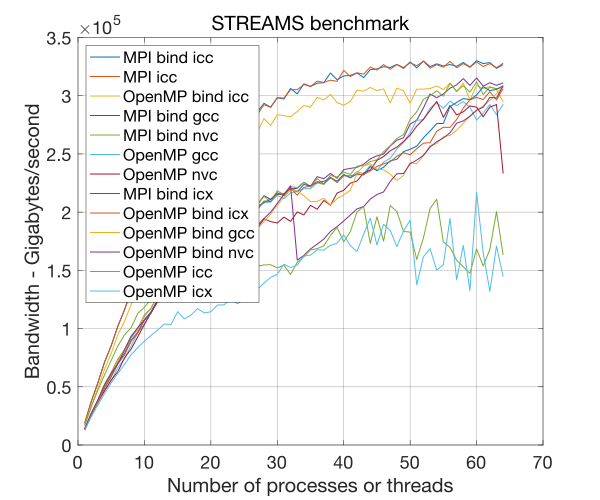
Fig. 17 Comprehensive STREAMS performance on Intel system#
Note the two dips in the performance with OpenMP and gcc using binding in Fig. STREAMS benchmark gcc.
Requesting the spread binding produces better results for small core counts but poorer ones for larger ones.
These are a result of a bug in the gcc spread option, placing more threads in one NUMA domain than the other.
For example, with gcc, the OMP_DISPLAY_AFFINITY shows that for 28 threads, 12 are placed on NUMA region 1, and 16 are placed on the other NUMA region.
The other compilers spread the cores evenly.
Fig. STREAMS benchmark icc shows the performance with the icc compiler. Note that the icc compiler produces significantly faster code for
the benchmark than the other compilers
so its STREAMS speedups are smaller,
though it
provides better performance. No significant dips occur with the OpenMP binding using icc, icx, and nvc;
using OMP_DISPLAY_AFFINITY confirms, for example, that 14 threads (out of 28) are assigned to each NUMA domain, unlike with gcc.
Using the exact thread placement that icc uses with gcc using the OpenMP OMP_PLACES option removes most of the dip in the gcc OpenMP binding result.
Thus, we conclude that on this system, the spread option does not always give the best thread placement with gcc due to its bug.
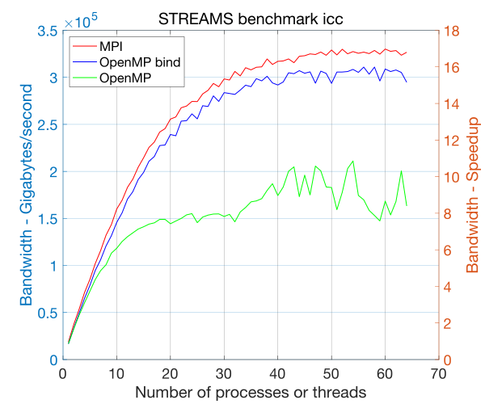
Fig. 18 STREAMS benchmark icc#
Fig. STREAMS benchmark icx shows the performance with the icx compiler.
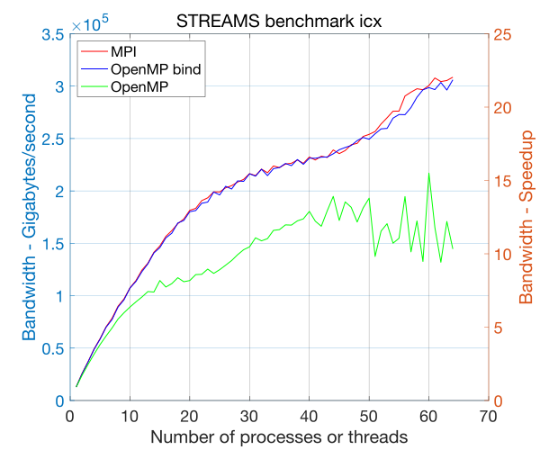
Fig. 19 STREAMS benchmark icx#
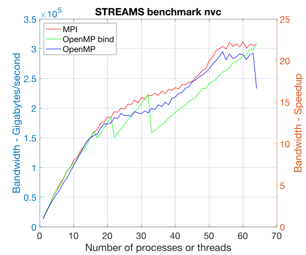
Fig. 20 STREAMS benchmark nvc#
To understand the disparity in the STREAMS performance with icc we reran it with the highest optimization level that produced the same results as gcc and icx: -O1 without -march=native.
The results are displayed in Fig. STREAMS benchmark icc -O1; sure enough, the results now match that of gcc and icx.
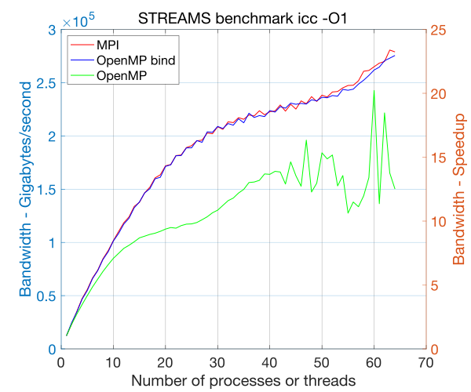
Fig. 21 STREAMS benchmark icc -O1#
Next we display the STREAMS results using gcc with parallel efficiency instead of speedup in STREAMS parallel efficiency gcc
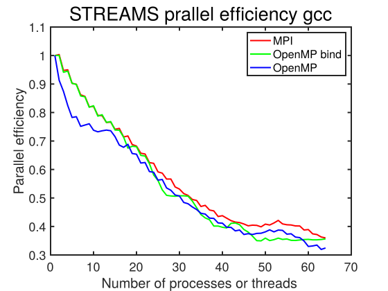
Fig. 22 STREAMS parallel efficiency gcc#
Observations:
For MPI, the default binding and mapping on this system produces results that are as good as providing a specific binding and mapping. This is not true on many systems!
For OpenMP gcc, the default binding is better than using
spread, becausespreadhas a bug. For the other compilers usingspreadis crucial for good performance on more than 32 cores.We do not have any explanation why the improvement in speedup for gcc, icx, and nvc slows down between 32 and 48 cores and then improves rapidly since we believe appropriate bindings are being used.
We now present a limited version of the analysis above on an Apple MacBook Pro M2 Max using MPICH, version 4.1, gcc version 13.2 (installed via Homebrew), XCode 15.0.1 and -O3 optimization flags with a smaller N of 80,000,000. macOS contains no public API for setting or controlling affinities so it is not possible to set bindings for either MPI or OpenMP. In addition, the M2 has a combination of performance and efficiency cores which we have no control over the use of.
Fig. STREAMS benchmark on Apple M2 provides the results. Based on the plateau in the middle of the plot, we assume that the core numbering that is used by MPICH does not produce the best binding.
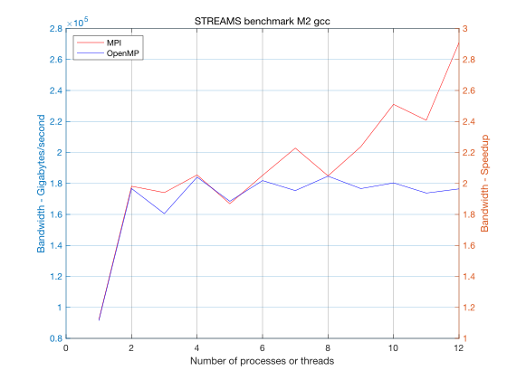
Fig. 23 STREAMS benchmark on Apple M2#
OpenMPI (installed via Homebrew) produced similar results.
Detailed study with application#
We now move on to a PETSc application which solves a three-dimensional Poisson problem on a unit
cube discretized with
finite differences whose linear system is solved with the PETSc algebraic multigrid preconditioner, PCGAMG and Krylov accelerator GMRES. Strong scaling is used to compare with the STREAMS benchmark: measuring the time to construct the preconditioner,
the time to solve the linear system with the preconditioner, and the time for the matrix-vector products. These are displayed in Fig. GAMG speedup. The runtime options were
-da_refine 6 -pc_type gamg -log_view. This study did not attempt to tune the default PCGAMG parameters.
There were very similar speedups for all the
compilers so we only display results for gcc.
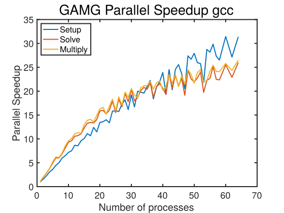
Fig. 24 GAMG speedup#
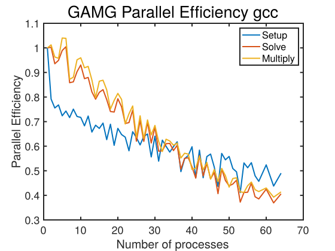
Fig. 25 GAMG parallel efficiency#
The dips in the performance at certain core counts are consistent between compilers and results from the amount of MPI communication required from the communication pattern which results from the different three-dimensional parallel grid layout.
We now present GAMG on the Apple MacBook Pro M2 Max. Fig. GAMG speedup Apple M2 provides the results. The performance is better than predicted by the STREAMS benchmark for all portions of the solver.
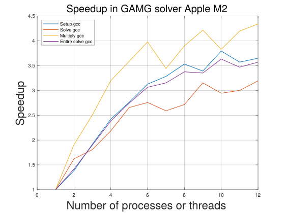
Fig. 26 GAMG speedup Apple M2#
Application with the MPI linear solver server#
We now run the same PETSc application using the MPI linear solver server mode, set using -mpi_linear_solver_server.
All compilers deliver largely the same performance so we only present results with gcc.
We plot the speedup in Fig. GAMG server speedup and parallel efficiency in GAMG server parallel efficiency
Note that it is far below the parallel solve without the server. However, the distribution time for these runs was always less than three percent of the complete solution time.
The reason for the poorer performance is because in the pure MPI version, the vectors are partitioned directly from the three-dimensional grid; the cube is divided into (approximate)
sub-cubes, this minimizes the inter-process communication, especially in the matrix-vector product. In server mode, the vector is laid out using the cube’s natural ordering, and then each MPI process is assigned a contiguous subset of the vector. As a result, the flop rate for the matrix-vector product is significantly higher than that of the pure MPI version.
This indicates that a naive use of the MPI linear solver server will not produce as much performance as a usage that considers the matrix/vector layouts by performing an
initial grid partitioning. For example, if OpenMP is used to generate the matrix, it would be appropriate to have each OpenMP thread assigned a contiguous
vector mapping to a sub-cube of the domain. This would require, of course, a far more complicated OpenMP code that is written using MPI-like parallelism and decomposition of the data.
PCMPI has two approaches for distributing the linear system. The first uses MPI_Scatterv() to communicate the matrix and vector entries from the initial compute process to all of the
server processes. Unfortunately, MPI_Scatterv() does not scale with more MPI processes; hence, the solution time is limited by the MPI_Scatterv(). To remove this limitation,
the second communication mechanism is Unix shared memory shmget(). Here, PCMPI allocates shared memory
from which all the MPI processes in the server
can access their portion of the matrices and vectors that they need.
There is still a (now much smaller) server processing overhead since the initial data storage of the sequential matrix (in MATSEQAIJ storage)
still must be converted to MATMPIAIJ storage. VecPlaceArray() is used to convert the sequential vector to an MPI vector, so there is
no overhead, not even a copy, for this operation.
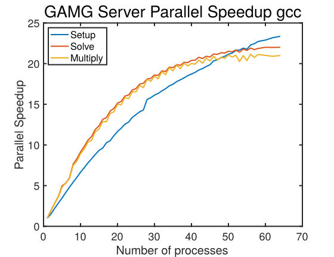
Fig. 27 GAMG server speedup#
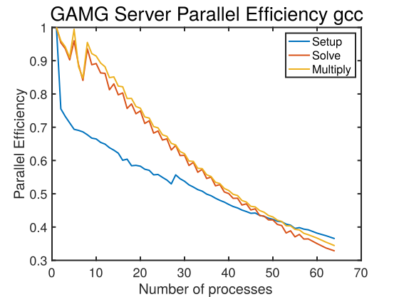
Fig. 28 GAMG server parallel efficiency#
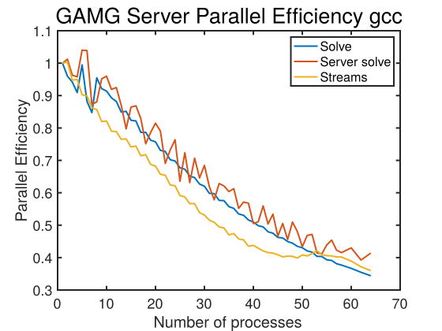
Fig. 29 GAMG server parallel efficiency vs STREAMS#
In GAMG server parallel efficiency vs STREAMS, we plot the parallel efficiency of the linear solve and the STREAMS benchmark, which track each other well. This example demonstrates the utility of the STREAMS benchmark to predict the speedup (parallel efficiency) of a memory bandwidth limited application on a shared memory Linux system.
For the Apple M2, we present the results using Unix shared-memory communication of the matrix and vectors to the server processes
in GAMG server solver speedup on Apple M2.
To run this one must first set up the machine to use shared memory as described in PetscShmgetAllocateArray()
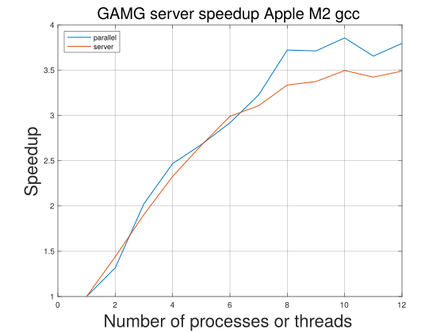
Fig. 30 GAMG server solver speedup on Apple M2#
This example demonstrates that the MPI linear solver server feature of PETSc can generate a reasonable speedup in the linear solver on machines that have significant memory bandwidth. However, one should not expect the speedup to be near the total number of cores on the compute node.
Footnotes